Getting Started with Runestone
For this course, we will be using an online interactive textbook called Foundations of Python Programming, which is available through a platform called Runestone Academy. These instructions will walk you through the process of setting up an account, using the textbook, and accessing reading assignments.
Creating a Runestone Account
First, go to https://runestone.academy. This is the main landing page for Runestone Academy. Once there, the page should look similar to the image below:
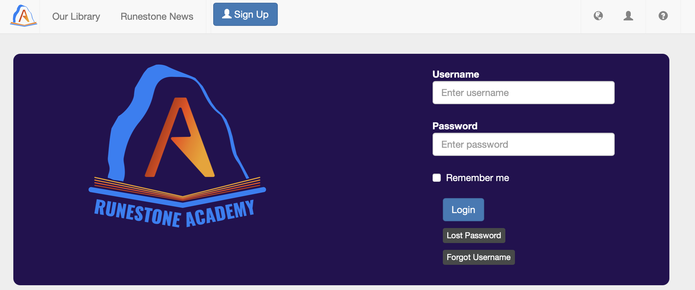
Click the Sign Up button in the upper left. This takes you to a form like the one below:
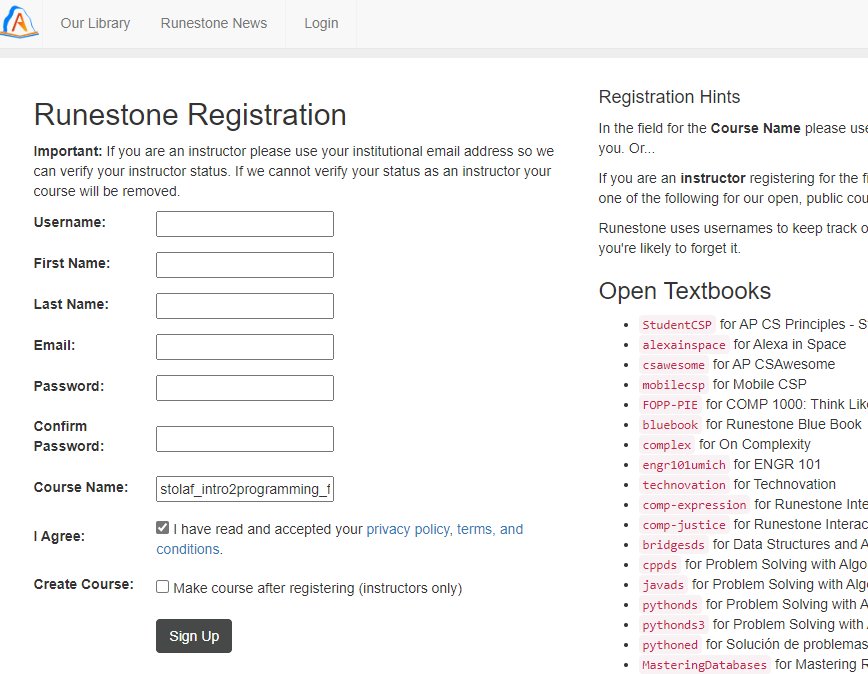
A few notes while creating your account:
- Runestone Academy is external to St. Olaf and may use your usage data for academic research. Their Privacy Policy is available at the bottom of the page.
- You do not need to use your real name or St. Olaf email address. However, if you use different info, please email Prof. Mandery (mander1@stolaf.edu) with your Runestone name/email so your progress can be tracked.
- Do not reuse your St. Olaf password. Use a unique one. A password manager or memorized unique passwords for important accounts is recommended.
- The course name is stolaf_spring2025 (type this manually).
- Check the box to agree to privacy/terms.
- Do not check the box to create a course.
After clicking Sign Up, you may be asked to make a donation:
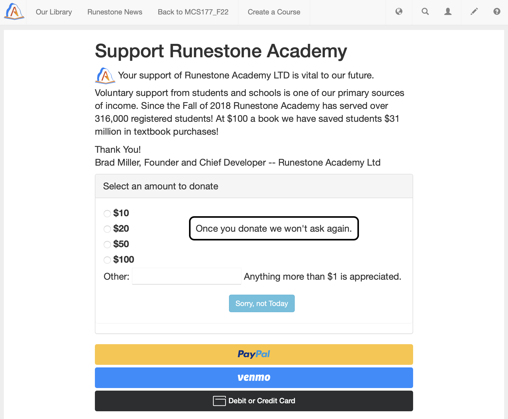
Donating is optional and doesn’t affect access or features. Click “Sorry, not Today” if you’d like to skip.
After that, you’ll be taken directly to the textbook:
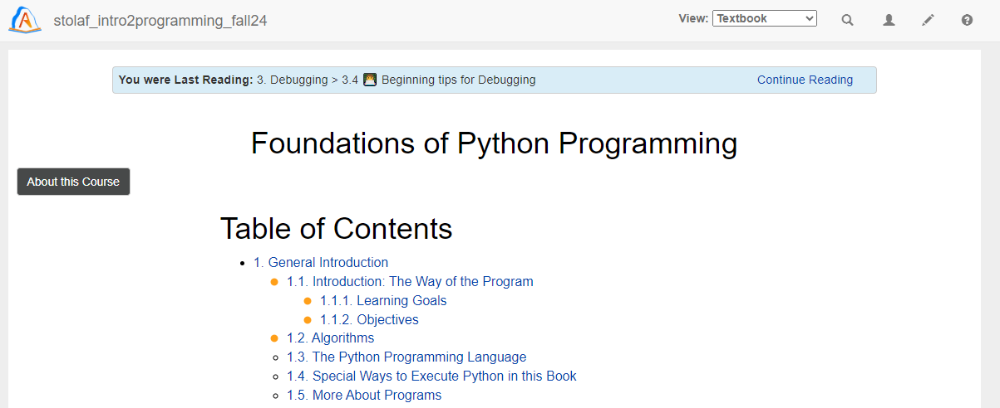
Note: The projects listed at the end of the textbook are not your course projects. You are welcome to explore them, but your actual projects are separate.
Accessing Reading Assignments
To access assignments:
- Log into Runestone.
- Click the person icon (top right), then choose Assignments:
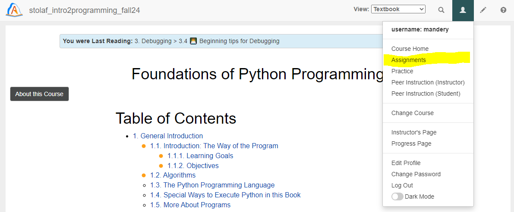
You’ll see a list like this (not all assignments will appear at once):
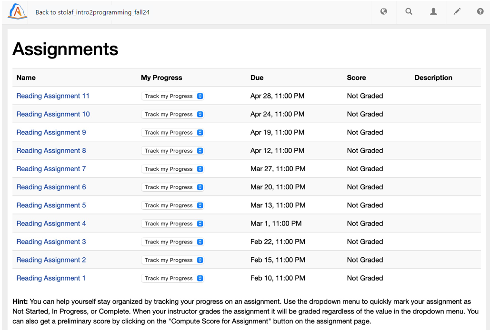
Click on the assignment you want. For example:

Each assignment has multiple pages. To begin, click the first link (e.g., “General Introduction/1.1 Introduction: The Way of the Program”). This will take you to a reading page:
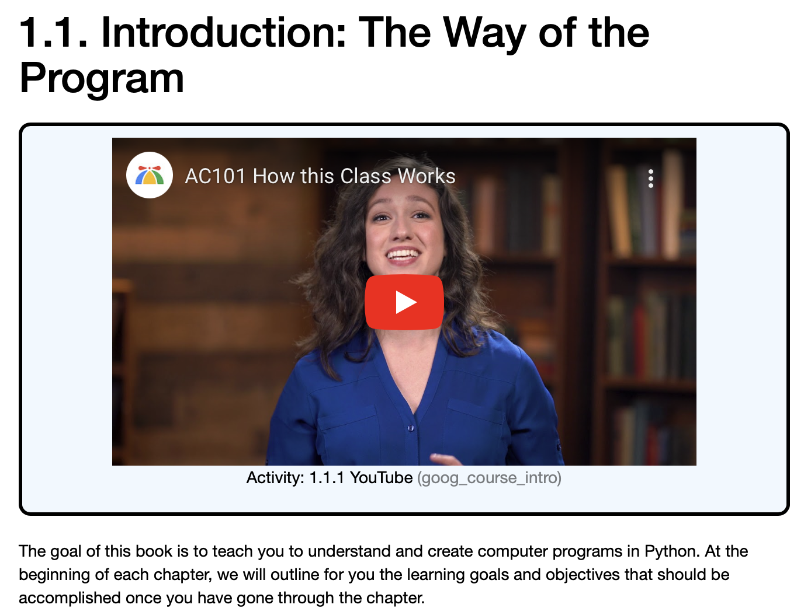
Read the page, watch videos, complete exercises. When done, you’ll see a green “Completed. Well Done!” message. For text-only pages, click Mark as Completed.
Navigate using Continue to page … to follow the assignment sequence.
Some pages include interactive exercises:
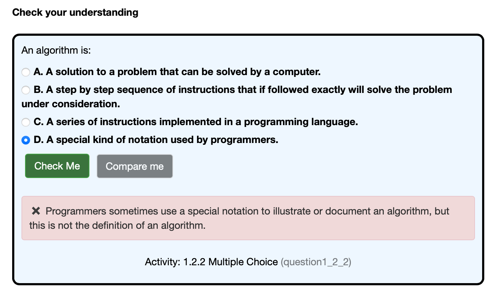
Try to complete these to the best of your ability. There’s no limit on attempts. You don’t need perfect answers, but you must make a serious effort. Ask for help if needed.
Return to the assignment landing page to track progress. Green check marks indicate pages you’ve completed. Use the Compute Score for Assignment button to update your progress.
You can also use the In Progress and Finished buttons to help track your status:
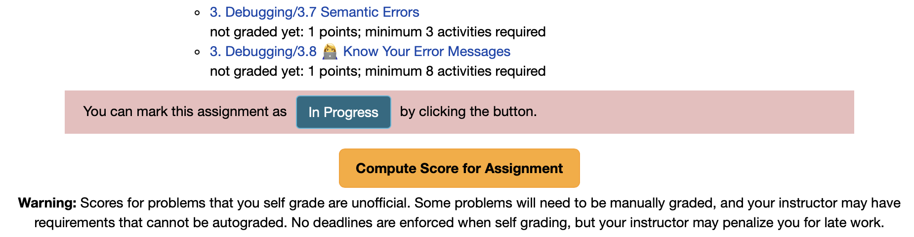
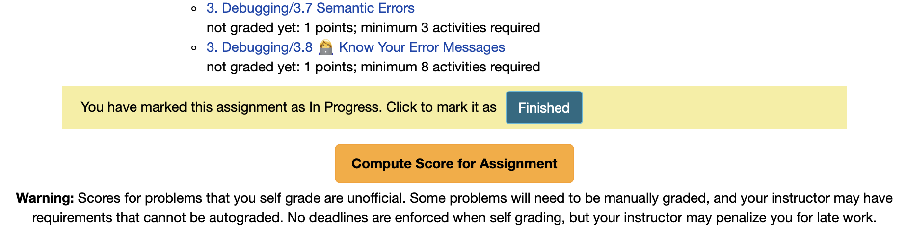
These buttons are just for you—grading is based on actual activity before the due date.
After clicking Compute Score, your completion % will update. Individual sections also show scores:
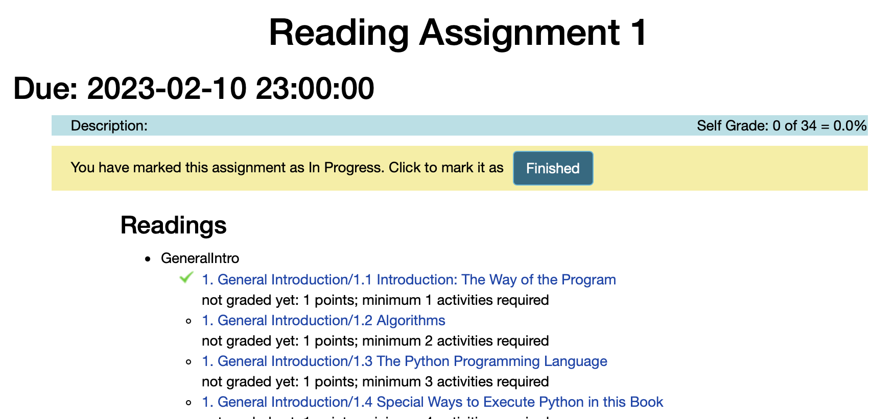
⚠ Note:
Some textbook sections are still being developed. Occasionally, a completed section may not be recorded. As explained in the syllabus, assignments are graded on a 2-point scale, and anything >80% completion will receive full credit.